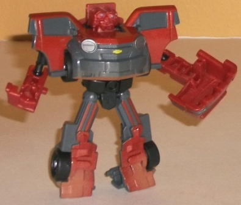

Allegiance : Autobot
Size : Legend
Difficulty of Transformation : Very Easy
Color Scheme : Charcoal black and some silver and light sky blue
Individual Rating : 6.9
 Straightaway
Shootout (Target Exclusive)
Straightaway
Shootout (Target Exclusive)
Price
: ~$20 U.S.
Overall Rating
: 7.4
(NOTE: Because this set is composed of repaints,
this is not a full-blown review. This mainly covers any changes made to
the set and the color scheme, and merely compares it to the original versions
of these molds. For a review on the original mass-release TF1 Legends Ironhide
mold, go
here
. For a review on the original
mass-release RotF Legends Mudflap mold, go
here
.
For a review on TF1 Legends Autobot Jazz, the mold used for Runamuck, go
here
.
For a review on Universe 2.0 Legends Warpath, the mold used for Sparkcrusher,
go
here
. For a review on RotF Legends Sideswipe,
the mold used for Swerve, go
here
.)
 Ironhide
Ironhide
Allegiance
: Autobot
Size
: Legend
Difficulty of Transformation
: Very
Easy
Color Scheme
: Charcoal black and
some silver and light sky blue
Individual Rating
: 6.9
Ironhide has a few minor
noticeable differences from his initial mass-release version, but they're
definitely not something that's going to change the mood of the figure.
His black is more of a lighter, less "pure" charcoal black this time around,
while most of the paint detailing used on his robot mode is just silver
instead of mixing in some light silvery blue or summat like that. The paint
apps are more concentrated on the legs in robot mode this time around as
well, as opposed to his chest. His windows and eyes are painted a light
sky blue, in my opinion the only positive change-- it really contrasts
really well with the black.
No mold changes have
been made to Ironhide.
 Mudflap
Mudflap

Allegiance
: Autobot
Size
: Legend
Difficulty of Transformation
: Very
Easy
Color Scheme
: Dull gray, dark sparkly
pumpkin orange, black, and some silver, pale yellow, light chalky orangish
tan, and sky blue
Individual Rating
: 6.5
Mudflap's main shade
of orange is a shade (and only a shade) duller than the mass-release version,
and he's got some dusting of some muddy orangish-brown paint near the bottom
of his vehicle mode and robot feet. Those are the only changes made, so
he's definitely not the reason you're going to be getting this set, if
you do.
No mold changes have
been made to Mudflap.
Runamuck
Allegiance
: Decepticon
Size
: Legend
Difficulty of Transformation
: Very
Easy
Color Scheme
: White, black, and
some dark blue, dull golden yellow, and light red
Individual Rating
: 7.3
Finally a repaint of
Legends Jazz that isn't ...y'know... Jazz! Runamuck here is an homage to
the G1 character of the same name, at least partially. He shares the same
major color of white in common with his G1 namesake, but differs on the
details, like the neat red stripe down the middle of the hood and the dark
blue rimming the sides of the alt mode. Both go exceedingly well against
the white, and Runamuck's other color, black, of course contrasts well
with the white as well. Against the black the dark blue is a bit TOO dark,
but that's a very small complaint given how little dark blue actually comes
up adjacent to that color. Two slightly more substantial complaints I have
regarding the color scheme are that A. The blue visor/red face just is
a weird color combo for that body part, and B. Many important details in
vehicle mode, like the headlights/tailights and grill, are ignored in favor
of the red and blue stripes.
No mold changes have
been made to Runamuck.
Sparkcrusher
Allegiance
: Decepticon
Size
: Legend
Difficulty of Transformation
: Very
Easy
Color Scheme
: Dull military green,
dull pale milky orange, and some gray and black
Individual Rating
: 6.7
Sparkcrusher here is
definitely the odd 'bot out here, as he's not a repaint of a movie toy
but rather a Universe 2.0 "Classics" toy! The aesthetic discrepancy aside,
Sparkcrusher is an homage to G1 Gutcruncher, but with a less gory-sounding
name. The green and pale orange is an interesting color combo and works
particularly well on a tank, even if it's not particularly astounding.
The gray legs and black treads also go decent enough with the other colors,
but other than those spots, Sparkcrusher has barely any paint apps. And
he could really use some, particularly in tank mode where there's large
spots of unpainted green with tons of mold details just begging to be highlighted.
Perhaps transferring the gray from the nearly-completely-painted upper
robot legs to various vehicle mode details would've worked a lot better.
No mold changes have
been made to Sparkcrusher.
 Swerve
Swerve
Allegiance
: Autobot
Size
: Legend
Difficulty of Transformation
: Very
Easy
Color Scheme
: Red, black, and some
silver, pale metallic gold, and dark blue
Individual Rating
: 7.9
Like the mainline
deluxe
repaint
, Swerve is a partial homage to G1 Swerve in terms of his color
scheme. And as with the deluxe redeco, this repaint of Sideswipe is primarily
red and black-- both colors of which, of course, go pretty well together.
The red is a particularly nice shade, too. However, even though the overall
scheme is good and an improvement over Legend Sideswipe's, I can't help
but feel that Swerve is a bit of a missed opportunity. The best accent
colors-- and both are particularly gorgeous shades-- are the bits of dark
blue and metallic gold used for some small details like headlights and
some bits on the robot chest. If they were applied more liberally, they
REALLY would've made this Legends class redeco very striking.
No mold changes have
been made to Swerve.
The Straightaway Shootout Legends class set is a hearty recommendation to Legends class Transformers fans. First and foremost, you get 5 Legends class toys for $20-- basically one free (which is why I upped the overall rating a bit more than the actual average of the individual toys' scores). Granted, Mudflap and Ironhide are barely different, so if you have either of those already the recommendation of this set goes down quite a bit. But the three redecos are at least good (Sparkcrusher) if not great (Runamuck and Swerve), and although Mudflap is a little iffy, none of the molds are outright bad for their size class.
Reviews by Beastbot
(Image of Ironhide's robot mode from Hasbro .)